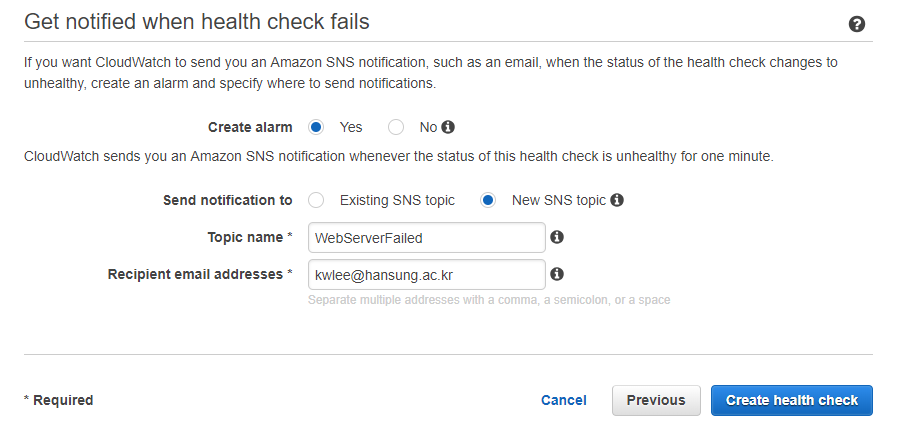
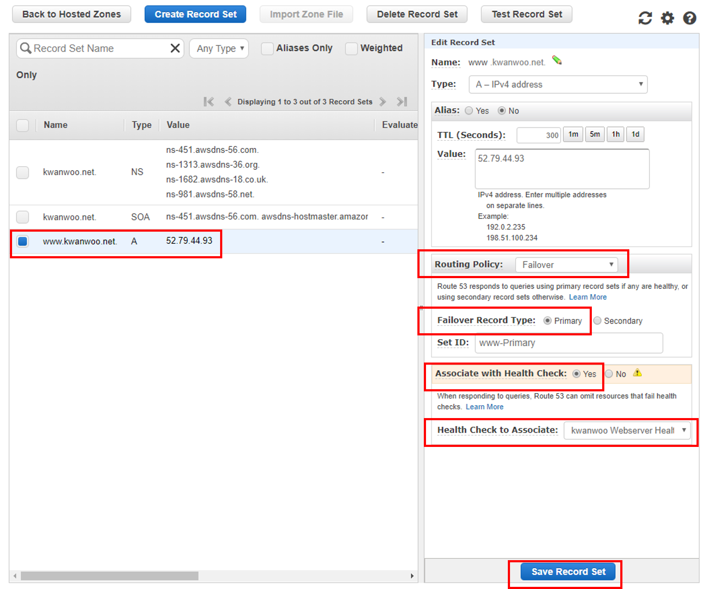

- 가용성과 확장성이 뛰어난 DNS(도메인 이름 시스템) 웹 서비스
DNS (Domain Name System)
example.com 같이 쉽게 이해할 수 있는 도메인 이름을 컴퓨터가 인터넷에서 서로를 찾을 수 있도록 해 주는 IP 주소라는 숫자로 변환하는 시스템

Amazon Route 53의 주요 기능
- 도메인 이름 등록
- 인터넷 트래픽을 도메인의 리소스로 라우팅
- 리소스 상태 확인
https://www.youtube.com/watch?v=VBW-5mwDKXQ
DNS (Domain Name System)
example.com 같이 쉽게 이해할 수 있는 도메인 이름을 컴퓨터가 인터넷에서 서로를 찾을 수 있도록 해 주는 IP 주소라는 숫자로 변환하는 시스템
Amazon Route 53의 주요 기능

절차
트래픽을 리소스로 라우팅하려면 호스팅 영역에 레코드라고도 하는 리소스 레코드 세트를 생성해야 합니다.
각각의 레코드에는 도메인의 트래픽을 라우팅할 방법에 관한 다음과 같은 정보가 포함되어 있습니다.
리소스를 사용할 수 없게 될 때 알림을 수신하고자 하는 경우, 상태 확인이 작동하는 방식의 개요


[Create Record Set]를 선택합니다.

생성결과

테스트
IP (예, 52.79.44.93)로 접속

Domain Name으로 접속

관련 값들을 입력한 후, [Next] 선택합니다.

[Create alarm]에 대해서 [Yes] 선택
[Send notification to]에 대해서 [New SNS topic] 선택
[Topic name]에 대해서 [WebServerFailed] 입력
[Recipient email addresses]에 대해서, 이메일 주소 입력
[Create health check] 선택

[Save Record Set] 선택

[다음]을 계속 누르고, [버킷 만들기]가 나오면 이를 쿨릭

버킷 이름을 선택하고, [권한] 탭을 선택
[버킷정책]을 선택하고, 다음 버킷 정책을 복사하여 텍스트 편집기에 붙여 넣습니다.
{
"Version":"2012-10-17",
"Statement":[{
"Sid":"AddPerm",
"Effect":"Allow",
"Principal":"*",
"Action":[ "s3:GetObject" ],
"Resource":[
"arn:aws:s3:::your-domain-name/*"
]
}]
}버킷 정책에서 값 [your-domain-name]을 www.kwanwoo.net 같은 도메인 이름으로 대체합니다.
[속성] 탭에서 [정적 웹 사이트 호스팅]을 확장합니다.
[이 버킷을 사용하여 웹 사이트를 호스팅합니다]을 선택합니다.
[인덱스 문서]에 index.html을 입력합니다.
[저장]를 선택합니다.
버킷(예, www.kwanwoo.net)에 index.html 파일을 업로드 합니다.
[Alias Target] 드롭다운 리스트에서 [S3 Website Endpoints]의 endpoint를 선택

[Routing Policy] 에서 [Failover] 선택
[Failover Record Type]에서 [Secondary] 선택
[Associate with Health Check]에서 [No] 선택
[Create] 선택